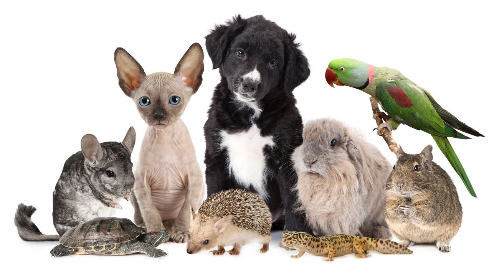

En la siguiente página encontrarás información respectiva a algunas recomendaciones para el correcto cuidado de estos hermosos animalitos que alegran nuestros días.
Estos pequeños peludos de cuatro patas son la compañía de muchas personas alrededor del mundo, al escoger una mascota estos suelen ser de las primeras opciones. Al igual que otras, ellos ayudan al desarrollo de la responsabilidad y si son entrenados pueden incluso salvar vidas, cómo compañía de personas con algun tipo de discapacidad, detectando enfermedades, y en algunos casos cómo protección para evitar que una persona se autolesionen al sufrir convulsiones o ataques de ansiedad. Algunas recomendaciones para cuidar de estos amigos peludos son:
Es importante que el cuente con alguna identificación, como una placa en su collar, en donde se pueda observar su nombre, dirección de la vivienda y un número de teléfono para poder comunicarse y devolver la mascota a su dueño.
Podríamos decir que una mascota es como un niño pequeño. Tiene la necesidad de explorarlo todo y llevárselo a la boca. Para evitar accidentes en casa, cuida de tu perro y no dejes a su alcance nada que pueda causarle daño.
No, a los perros no puedes darle chocolate. Recuerda que hay comida que no se le puede dar a pesar de las caritas que hagan mientras piden eso. Es fundamental para tu perro estar bien alimentado. La norma número uno para cuidar perros en casa es ofrecerle una dieta variada y saludable. puedes optar por dietas secas o húmedas, incluso por una alimentación natural y cocinar tus propias recetas. Lo importante es elegir un alimento de gama alta, completo, cuyos ingredientes sean de calidad. Solo así procurarás que tu perro crezca sano y feliz.
La higiene es otro aspecto que no debes descuidar. Cepilla a tu perro diariamente, o varias veces al día si tiene mucho pelo. Con este gesto, además de eliminar pelo y piel muerta, estrechas lazos con tu perro y afianzas vuestro vínculo. Aprovecha y cuida a tu perro al máximo: háblale con cariño, acarícialo, que sienta todo tu amor y respeto.
Las visitas al veterinario solo deberían ser de rutina. Nadie quiere ir corriendo al veterinario por una emergencia. Aunque lo accidentes ocurren, evita enfermedades o infestaciones de parásitos en tu perro con unos buenos hábitos de higiene, una alimentación adecuada y visitas periódicas al veterinario.
Nunca dejes solo a tu perro, en ningún lugar, mucho menos en un coche durante las horas centrales del día. Si no te queda más remedio y debes dejarlo solo en casa, procura que no sea demasiado tiempo. Existen, si no puedes dejarlo en compañía de otra persona, piensa en las opciones que tienes. ¡Siempre hay una alternativa!
Si tu perro hace cosas bien y tiene un buen comportamiento, prémialo. No solo puedes hacerlo con chucherías para perros. Puedes premiar su buena conducta con caricias, alentándolo con frases motivadoras y recordándole siempre que puedas cuánto lo quieres.
Una de las mejores cosas que puedes hacer por tu perro es educarlo. Enséñale a hacer sus necesidades en los lugares adecuados, a socializar con otras personas y animales. Es muy importante hacerlo mientras es un cachorro, y que sea un aprendizaje para toda la vida. Si está educado, será más fácil pasear con él, llevarlo al parque, al veterinario o incluso en un medio de transporte.
Estos pequeños peludos de cuatro patas son al igual que los ya mencionados perros, la compañía de muchas personas alrededor del mundo, al escoger una mascota estos suelen ser de las primeras opciones en personas que no pueden dedicarle la misma atención que a un perro puesto que estos animalitos son más independientes, algunos de ellos prefieren pasar tiempo a solas y decirle no a los mimos cuando su dueño desea consentirlo. Esto no quiere decir que no disfruten de la buena compañía y que la atención que deben recibir sea menor. Algunas recomendaciones para cuidar de estos lindos animales son:
Los emplumados amigos también pueden ser considerados mascotas, siempre y cuando no sean animales en riesgo de extinción o alguno que se ponga en cautiverio "porqué es lindo". Si estos amiguitos nacen en una jaula lo recomendable no es dejarlos luego en libertad porque ya están acostumbrados a una vida distinta, lo mismo que cuando son rescatados si se acostumbraron a estar en casa es mejor dejarlos allí. Causando horas de entretenimiento con sus divertidas ocurrencias cuando imitan sonidos, hoy vengo a contarte algunas recomendaciones para cuidar de estos amigos emplumados: